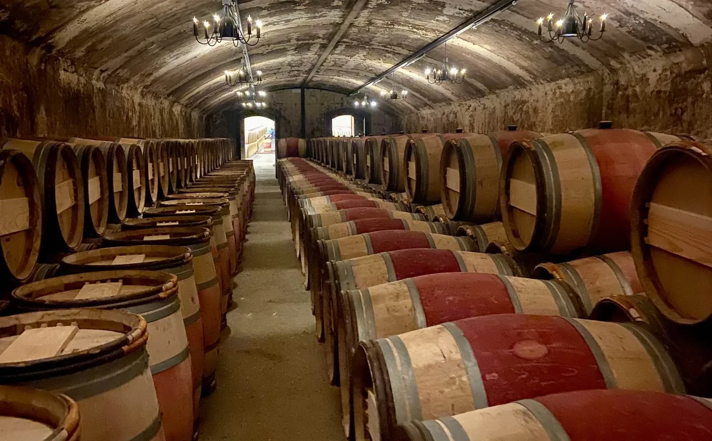
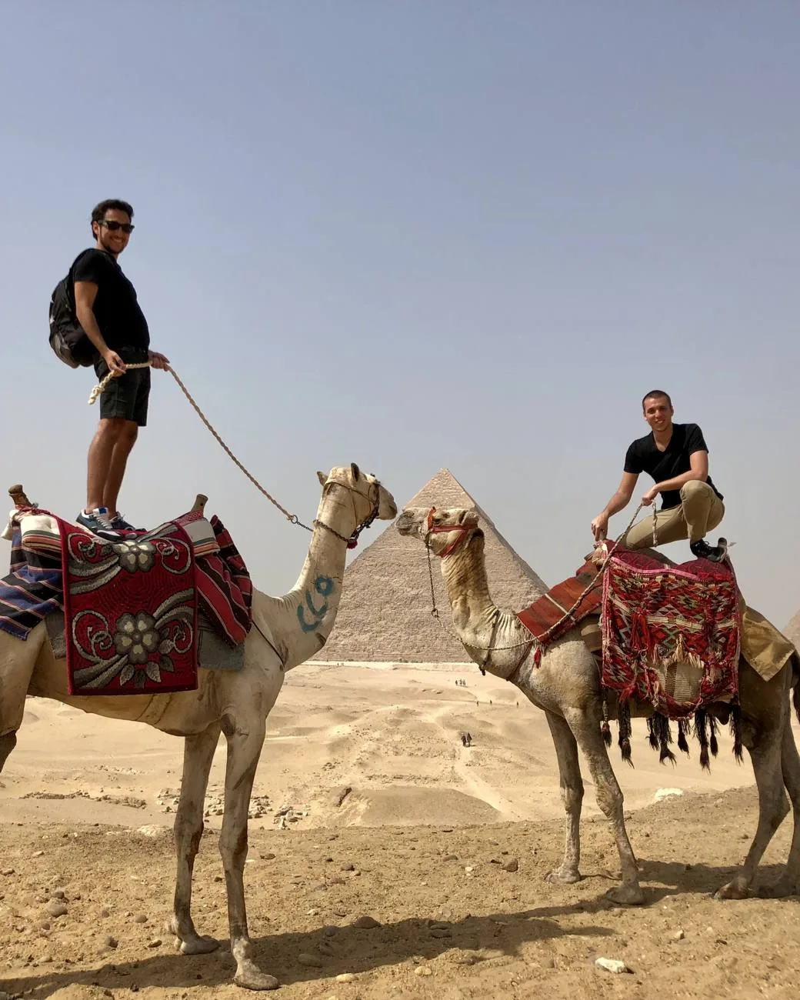

Once expediciones por año, cada destino una sola vez. Diez lugares, dos anfitriones de la casa y dos accesos en cada una.
 Italia · Octubre 2026
Italia · Octubre 2026
Una villa privada en las Langhe durante la semana de la trufa blanca.
 África austral · Noviembre 2026
África austral · Noviembre 2026
Del corazón geológico del Namib a las aguadas de Etosha, bajo el cielo oscuro de NamibRand.
Suiza · Diciembre 2026
Una casa engadina entera para el grupo y la semana de Navidad como la vive el valle.
 Finlandia y Noruega · Enero 2027
Finlandia y Noruega · Enero 2027
Del corazón sami de Inari al fiordo de Lyngen, con la aurora al alcance de la cama.
 Brasil · Febrero 2027
Brasil · Febrero 2027
El otro carnaval de Salvador, desde un camarote y con antropólogo, y el cierre en Trancoso.
 Japón · Marzo 2027
Japón · Marzo 2027
De Tokio a las islas de arte del mar interior, en el momento de la flor que cae.
 Bután y Nepal · Abril 2027
Bután y Nepal · Abril 2027
Doce noches por el Himalaya budista, del valle de Kathmandu a los de Bután.
 Marruecos · Mayo 2027
Marruecos · Mayo 2027
Nueve noches por el Marruecos de las ciudades imperiales, de Rabat a Marrakech, con el Alto Atlas en el medio.
 Croacia · Junio 2027
Croacia · Junio 2027
Ocho noches por las islas dálmatas a bordo de un catamarán tomado entero para el grupo, de Split a Dubrovnik.
 Estados Unidos · Julio 2027
Estados Unidos · Julio 2027
Diez noches por la Alaska salvaje, de los osos de Lake Clark a los glaciares del mar.
 Uzbekistán · Septiembre 2027
Uzbekistán · Septiembre 2027
Diez noches por la Ruta de la Seda uzbeka, de Tashkent a Samarcanda.

Lo mejor de un viaje casi nunca figura en el itinerario. Mi trabajo es que igual esté previsto.— Brian Blisniuk
Un acceso es una puerta que no se abre con una entrada: la parte del viaje que el dinero solo no consigue, porque depende de una relación, de un permiso con nombre propio o de un momento que no está a la venta.
No es un lugar caro. A una mesa cara se llega reservando; a un acceso se llega porque alguien del otro lado dijo que sí. Por eso cada expedición de la casa incluye dos, y por eso el detalle de cada uno se comparte con los que viajan y no antes.
Si un viajero con tiempo y presupuesto lo consigue llamando o reservando, es un buen restaurante o un buen hotel. No es un acceso.
Depende de que una persona concreta abra la puerta. Vive en una relación, no en un ticket, y por eso se sostiene en el tiempo o se pierde.
Entra en el dossier con la hora, el lugar y qué pasa ahí. Si hay que inflarlo para que suene bien, todavía no está listo.

AccesoLíderes políticos, autoridades locales o referentes de una comunidad, según el destino. Una hora sentados con alguien que tuvo que tomar decisiones ahí, para escuchar cómo fue y preguntar lo que quieras. No una charla protocolar: una conversación.
 Acceso
Acceso
Un arqueólogo en el yacimiento que excavó, un astrónomo bajo el cielo que estudia, un historiador en la ciudad que escribió. También un biólogo en el terreno, un sommelier en la cantina y un chef en su cocina. No un guía que repite: alguien que dedicó la vida a eso y contesta lo que le preguntes.

Cada expedición sale una vez al año, en una fecha publicada con meses de anticipación. El lugar se reserva con seña y el detalle contractual se entrega junto con la propuesta. No se arma sobre la marcha ni se repite en temporada alta.
Los itinerarios se escriben acá, día por día, y no se montan sobre paquetes de terceros. Cada jornada dice qué hacés, dónde dormís y a qué hora. Nada entra al papel sin estar cerrado: si falta el dato, se escribe sin él.
Diez es un número elegido, no un techo comercial. Alcanza para tomar una casa entera, entrar donde no entra un contingente y que la mesa de la noche siga siendo una mesa. Los anfitriones viajan con el grupo de principio a fin.
Entran las noches, las mesas del itinerario, los traslados internos, los accesos y los anfitriones. Quedan afuera los vuelos internacionales, el seguro y lo que consumas por tu cuenta. La lista completa está en cada dossier, antes de que decidas.
Pasaporte Negro es una casa chica, y esa es la decisión, no la etapa.
Prefiero once viajes por año que salgan exactamente como están escritos, antes que cincuenta que dependan de que todo salga bien. Es la única forma que conozco de firmar un itinerario y después poder sostenerlo, de la primera noche al último traslado.
Del otro lado de este correo estoy yo. No hay centro de atención ni formulario que derive a nadie: escribís y te contesto, y si la expedición que mirás no es para vos, te lo voy a decir.
Brian Blisniuk — Buenos Aires